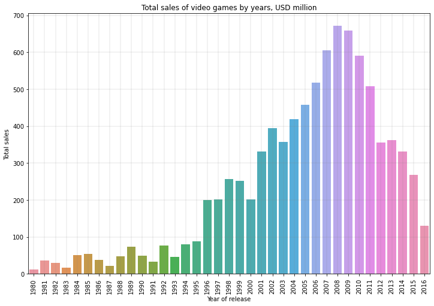
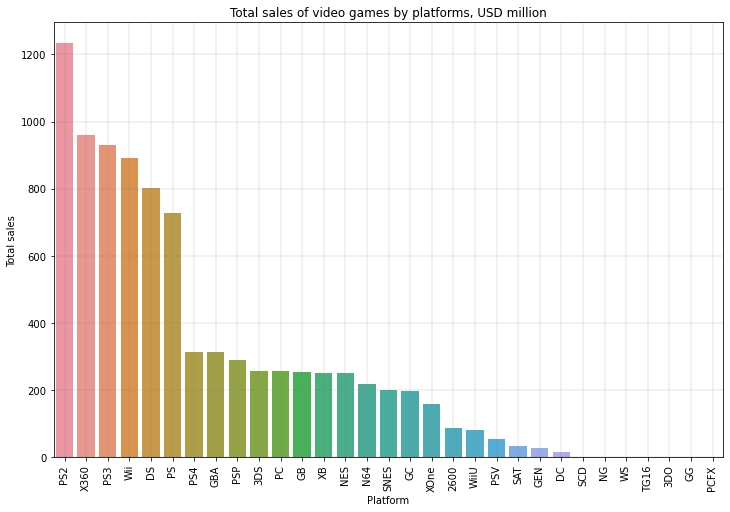
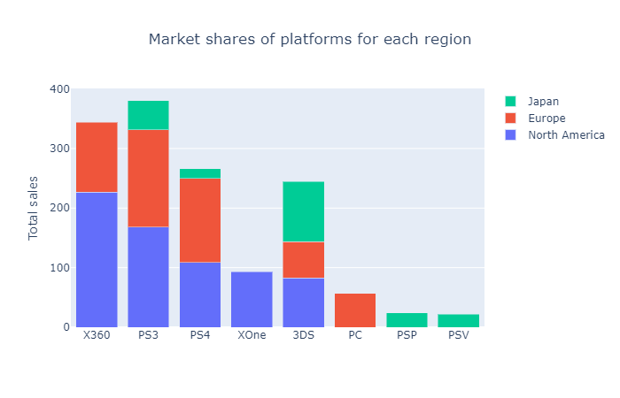
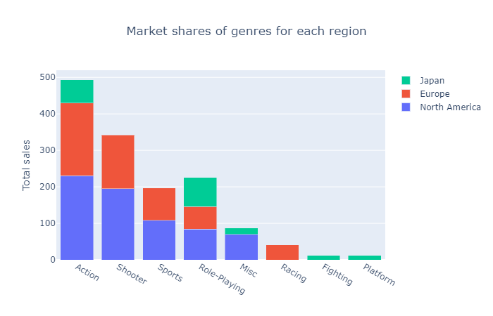

- 1. Exploratory data analysis of Total sales and platforms
-
The starting point for analysis will be display and analyze total sales across all regions since 1980.

The graph above shows the total sales of video games by release year. Since 2001, video game sales have grown rapidly and picked at 2008.
After 2008 the popularity of video games began to decline, and in 2012-2015 years total sales are approximately $250-350 million per year.
The next step will be identifying the most popular gaming platforms:

This figure shows the total sales of games on each platform. The most popular platform for the whole history of video games is the platform PS2.
The highest revenue of video games on this platform reaches more than 1200 million USD. Next, the most popular platforms are X360, PS3, Wii.
I decided to display the most popular platforms of 2015 and compare the total sales on these platforms with total sales of the most profitable
platforms to get a clear idea of how the sales of video games have changed (the chart below), and each of the platforms are gaining popularity
or on the peak of popularity to decide which games on which platforms will be the best-selling in 2017.

This graph shows the total sales of the two most popular platforms in the history of video games (PS2 and X360) and of the most popular platforms in 2015.
Total sales of the PS2 are growing rapidly, I believe it will also remain the most popular in 2017. Due to the fact that the lifecycle of the platform
is about 10-12 years and this number is decreasing, and that the data for 2016 may be incomplete, I propose to consider data from 2011 inclusive.
So I identified two platforms with the greatest potential in 2017: PS4 and XOne.
Distribution of games by genre

The diagram above shows the distribution of each genre of video games on the market in 2011-2016. The most profitable genre is action with total sales
of more than 550 USD million. In the second place the genre Shooter with total sales of about 400 USD million. In the third place - Role-Playing with
total sales of 245 USD million. The least profitable genres are Puzzle, Strategy, Adventure.
- 2. Create a user profile for each region
-
On this step of project I developed users' profiles for three sales regions:
- North America
- Europe
- Japan
The graph below demonstrate the market share for the most popular platforms and genres for investigated regions:

On the histogram above we can see the market share of the 5 most popular platforms for each region. We can see the signature difference between preferences of users from North America, Europe, and especially from
Japan. In Japan is not enter into the 5 best-selling platforms the most popular platform that is using by the consumers in NA and Europe,
and also we see 2 platforms that are not popularly in NA and in Europe: PSP and PSV. And we have 3 platforms that are popular in the all-region:
PS3, PS4, and 3DS. The XOne is in the top 5 only in NA and PC is only in Europe.
I believe these differences are due to differences in cultural characteristics and possibly the policy of state itself in relation to the
gaming business (for example the platforms PSP and PSV are platforms developed in Japan).

On the graph above we see the top sailing genres in each region (NA, Europe, and Japan). We have 2 genres that are popular in each region - Action and Role-Playing. Gamers in Japan are not
interested in genres such as Shooter and Sports, which are in the top 5 most popular genres in Europe and NA, and European gamers rarely choose
the Misk genre. Instead of Misk they prefer Racing (I think this is due to the love of Europeans for racing, films about racing, etc.).
Japanese players are also interested in Fighting and Platform genres, which are not popular in other regions, and this difference is due to
cultural characteristics and mentality of the Japanese.
- General conclusion
We can see the total annual revenue for console games declining. They were at their peak in 2004, now their popularity is falling. My guess is that this is due to the growing market for mobile video games (or another type of video game
that is gaining popularity: virtual reality). Regionally, North America is the largest market (percentage of total games sold over the past five years), followed by Japan. The gaming industry is quite specific, and in the graphs above,
we see how strongly the region in which the researched user is located affects. the user profile by region shows us that the CC platform is the most popular in Japan, which is not even included in the top 5 most popular user platforms
in America and Europe. For greater success, I propose to divide the purchased types of video games depending on the region where the store is located in accordance with the user profiles that we have compiled. Here are the user's profiles
for each region and let's take into account mainly those platforms that are at the peak of popularity or are gaining popularity:
- North America
- North America has the largest share of the consumer video games market. The most popular platforms in this region are X360, PS3, PS4, Xone, and 3DS. But taking into account the research conducted, I propose to focus on sales on the PS4
and XOne platforms. Here is the list of the most popular genres (in descending order): action, sport, shooter, platform, and misk.
- Europe
- The preferences of European users of video games do not differ much in terms of genres, the only difference is that the 5 most popular genres in Europe include not platform, but racing. As for the type of platform, we also see only one
difference with North America region: the PC, not the XOne.
- Japan
- For this region, I propose to promote video games on the PS4 platform, continue selling 3DS, and also two platforms that are popular only in Japan: PSP and PSV. The most popular genre in this region is role-playing, and further in descending order: action, misc, fighting, platform.
{kind=link}
{kind=link}
{kind=link}
{kind=link}